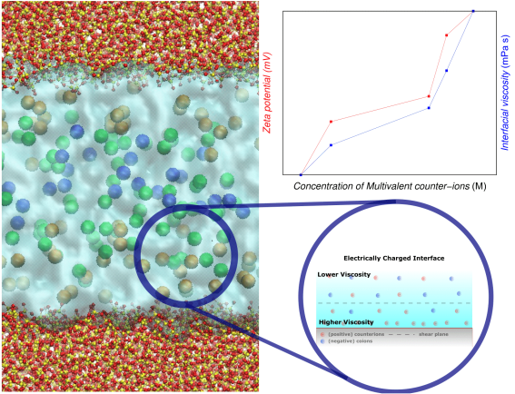

Effect of charge inversion on the electrokinetic transport of nanoconfined multivalent ionic solutions

Abstract
Understanding the effects of phenomena occurring at electrically charged interfaces, such as charge inversion (CI), is crucial for enabling electroosmosis as an efficient transport mechanism in nanodevices. Here, we employ molecular dynamics (MD) simulations to systematically analyze the effect of CI on the electrokinetic transport of multivalent ionic solutions confined in amorphous silica nanochannels. We employ mixtures of monovalent and multivalent counterions while fixing the total ionic concentration to establish correlations between observed phenomena and the amount of multivalent ionic species in the electrolyte solution. The results show that the development of CI is related to a decrease in the mobility of the fluid layers adjacent to the charged surface. In addition, we observe that interfacial overcharging disrupts the water molecular orientation in the fluid layers adjacent to the channel walls. From the non-equilibrium MD simulations of electro-osmotic flow, we disclose the influence of phenomena related to the presence of CI. In particular, flow reversal occurs in scenarios involving CI due to increased local viscosity and a higher concentration of coions within the hydrodynamically mobile and electrokinetically active region of the charged interface. We also find that the magnitude of the wall zeta potential displays a monotonic increase with the development of CI in the system. Moreover, we explain why positioning the wall zeta potential at an imaginary (slip) plane, which separates the hydrodynamically mobile and immobile fluid, is misleading.
Back